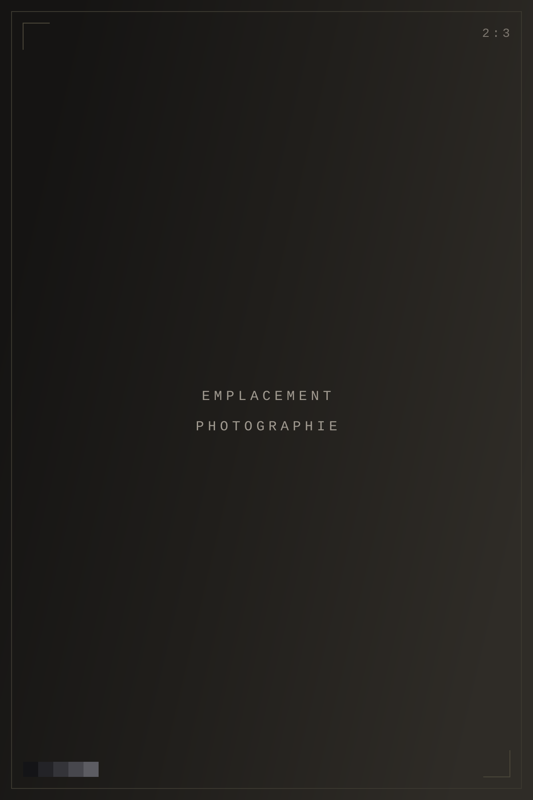
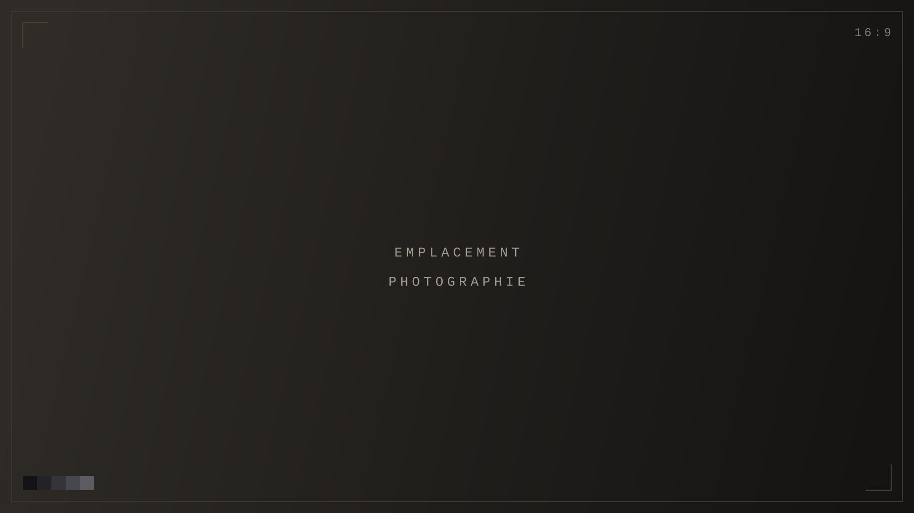
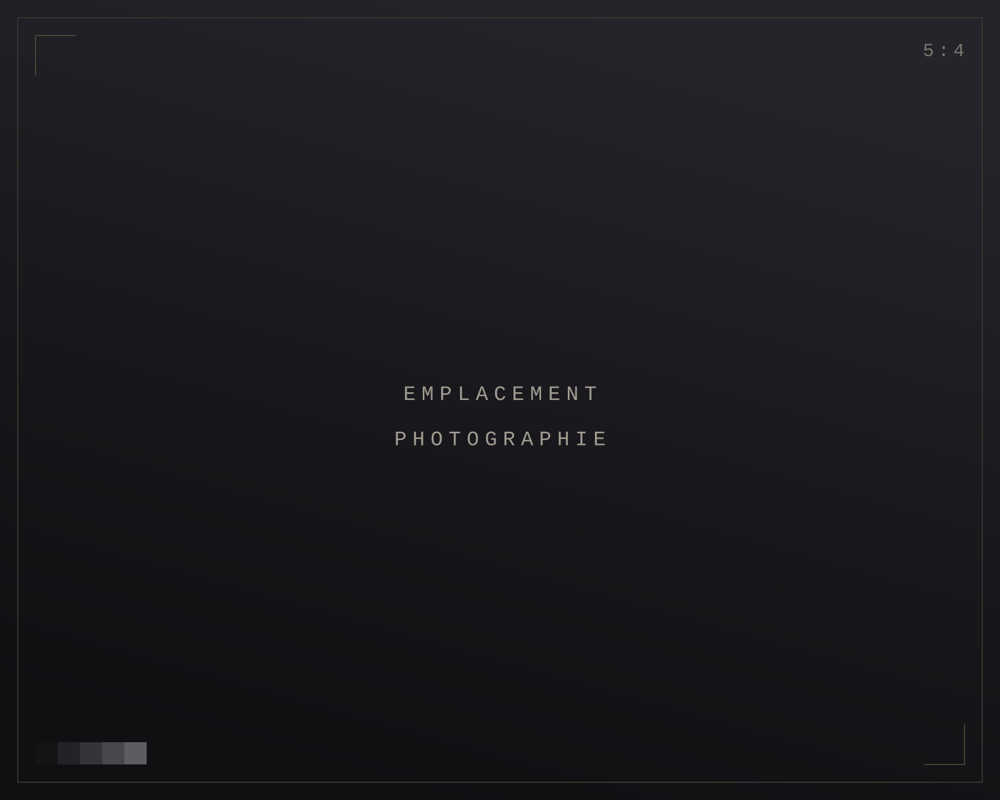

Portraits · Cérémonies · Événements · Reportages
Ange Kevin Photographie
Une sélection resserrée d'images, retenue après chaque séance.
Voir la sélection
Sélection
Ce qui reste après le tri
Les tirages présentés ici seront choisis parmi les séances les plus récentes. Les emplacements ci-dessous attendent les photographies définitives.




Événements
Derniers événements couverts
Chaque événement donnera lieu à un album : titre, date, catégorie, photographie de couverture et sélection d'images.

Aucun album publié pour l'instant — voir la page Événements
Présentation
Photographier, puis choisir
Quatre terrains : le portrait, la cérémonie, l'événement et le reportage. Après chaque séance vient le tri — ne garder que les images qui tiennent seules.